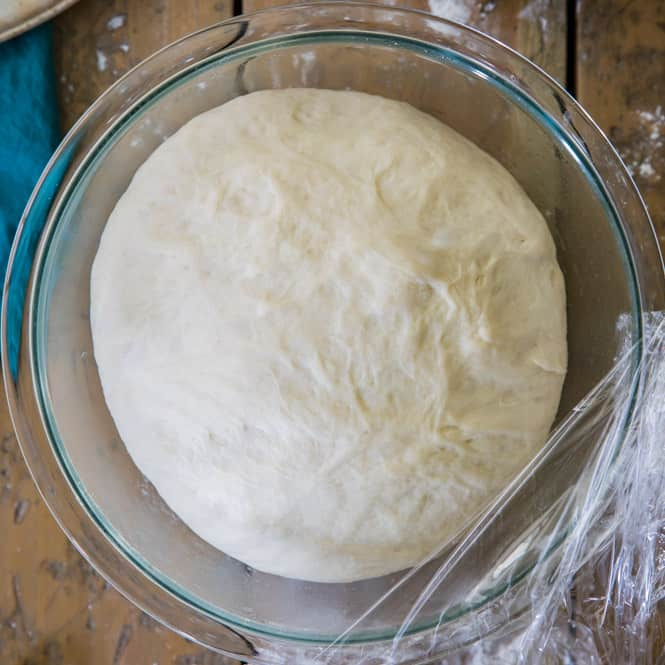

Homemade Pizza Dough

Description
More than any other food in this world, pizza is my favorite food. I could eat it for every meal and never tire of it. It's been my favorite
for as long as I can remember. When the pandemic started in 2020, I started to dabble in making different kinds of breads like most people stuck in
quarantine. This recipe has served me well in the years since and I use it for everyhing from thin crust to Detroit-style deep dish pizza. I hope
you love it as much as I do! xoxo -Max
Ingredients
- 3/4 cups of warm water
- 2 1/4 tablespoons of instant dry yeast
- 1 teaspoon of supgar
- 1 teaspoon of salt
- 2 tablespoons of olive oil
- Between 2 and 2 1/2 cups of all-purpose flour
Steps
- Combine yeast, water, and sugar in a large mixing bowl. Let sit for 15 minutes for yeast to activate. Mixture should have a round top or bubbles
after.
- Add salt and olive oil to mixture. Then, gradually add 2 cups of flour until a dough forms and does not stick to sides.
- Using your hands, knead dough for 7-10 minutes until a smooth ball is formed. Add flour as needed.
- In a greesed bowl, place dough and lightly cover with olive oil. Let the dough rise for 60 minutes.
- Once risen, place dough in desired pan. Shape as needed.
- Bake dough for 6 minutes in a 430 degree oven. Remove from oven and add toppings. Continue baking for 11 minutes.
- Remove from oven. Let sit for 15 minutes, serve, and enjoy!